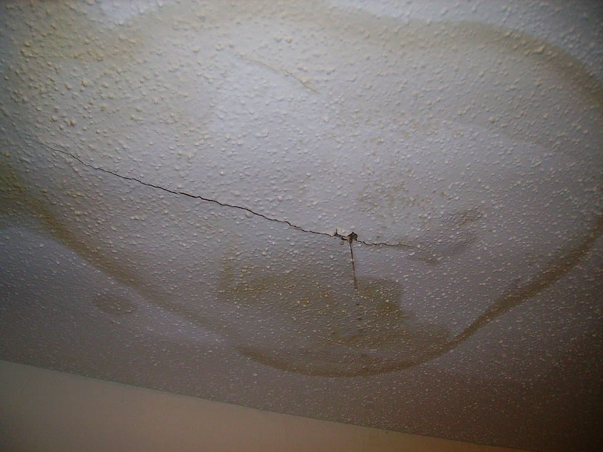

Pipe burst during a Boise cold snap? Here’s where it probably broke.
When the valley drops into the single digits, pipes in certain parts of a Boise home freeze first. The leak often doesn’t show until the thaw, when water starts running inside a wall. Here is where to look, and what to do in the first hour.
- Frozen pipes
- Burst lines
- Extraction
- Drying

Where pipes freeze first in Boise homes
Ranked roughly from most to least likely, based on where pipes run and how cold those spaces get.
| Location | Risk | Why | Where it shows up |
|---|---|---|---|
| Hose bibs (outdoor spigots) | Highest | A hose left attached traps water in the valve, and older non-frost-free bibs freeze easily | Inside the wall behind the spigot, often in a basement or crawlspace |
| Crawlspace supply lines | High | Vents left open in winter, missing insulation, wind on open ground | Musty smell, wet subfloor, high water bill |
| Garage walls & ceilings | High | Unheated space, with lines to upstairs bathrooms running through it | Water dripping from the garage ceiling during a thaw |
| Exterior walls in older homes | Moderate | Little or no insulation in pre-1960 North End and Bench homes | Kitchen and bath sinks on outside walls |
| Attic lines | Moderate | Some West Boise and newer homes run lines above the ceiling | Ceiling stain or sag |
| Interior walls | Low | Heated space on both sides | Rarely freezes unless the heat fails |
Burst pipe in Boise: what to do right now
Do these in order. Then call.
Shut off the main
Turn it clockwise until it stops. If you can’t find it or it won’t turn, Boise-area water utilities can shut off service at the curb.
Kill power to wet areas
Only from a dry spot at the panel. If water is near the panel, stay away and call the utility.
Open faucets
This drains the remaining pressure out of the lines and shows which fixtures still have water.
Photograph everything
The break, the water spread, and any damaged belongings, before cleanup.
Water running inside a wall right now?Shut off the main, then call. Boise-area crews are on call 24/7.
Call (321) 985-3339Boise winter prep, in five minutes
- Disconnect every hoseBefore the first hard freeze, usually by late October in Boise.
- Close crawlspace vents or add coversReopen them in spring to let moisture out.
- Open sink cabinets on outside wallsOn nights forecast in the single digits, so warm air reaches the pipes.
- Keep the heat at 55°F or higher when you travelInversions can keep temperatures low for days.
Common questions
How fast can someone get to my Boise home?
Response times depend on the pro’s schedule and current call volume. Cold snaps cause spikes. Emergency calls with active water are prioritized.
Will my insurance cover a frozen pipe?
Many policies cover sudden bursts from freezing, but some exclude damage if the home wasn’t kept heated. Document the cause and contact your insurer early.
Can I thaw a frozen pipe myself?
If it hasn’t burst, gentle heat from a hair dryer or space heater, kept away from flammables, with the faucet open, is common advice. Never use an open flame. If you see a crack or bulge, shut off the main first.